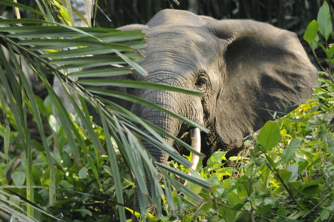

African Forest Elephant
Scientific name: Loxodonta cyclotis
Critically Endangered
Common name: African Forest Elephant
Scientific name: Loxodonta cyclotis
Conservation status: Critically Endangered
Primary range: Tropical forests of Central and West Africa
Diet: Leaves, fruit, bark, roots, seeds, and other vegetation
About the African Forest Elephant
African forest elephants, while similar to, African savanna elephants share many differences. For instance, African forest elephants are smaller in size and don’t reproduce as quickly, which is why it is much harder for them to recover from declines in their population.
Scientists have estimated that it would take approximately 81 years to reverse the nearly 70 percent decline in population of African forest elephants that has occurred in the last 10 years.
Habitat and Range
Commonly found in the tropical rainforest of western and central Africa, streams, swamps, and forest clearings, African forest elephants have a wide range of environments they inhabit.
During the dry season, the elephants gather in close proximity to human settlements and farmland. In addition, their habitat is influenced by poaching activity and they typically reside in areas that are protected from it.
Areas they use:
- Protected areas with strong law enforcement
- Oil fields
Areas they avoid:
- Environments with poachers, loggers, and vehicle traffic
Physical Characteristics
There are several distinct features of African forest elephants that distinguish them from other species. As one of the largest living land mammals, African forest elephants stand at nearly 10 ft tall and weigh 3 to 6.6 tons.
Common physical attributes:
- Straight tusks that point downward
- Gray or dark gray skin
- Round, small ears
Diet and Behavior
African forest elephants are herbivores. They have a diet that primarily consists of fruit, tree bark, and leaves. Soil is also eaten by this species in order to provide the essential minerals for survival.
Behavior:
- Feeds during daytime
- During the day, stays away from poaching and human activity
- Occasionally gathers in natural forest clearings
Major Threats
In 2021, African forest elephants became critically endangered due to poaching activity, habitat loss, and habitat fragmentation. Between 2002 and 2011, the population of African forest elephants decreased by 62%.
Threats African Forest Elephants Face:
- Habitat loss and fragmentation due to agriculture, livestock farming, logging, mining, armed conflict, and human infrastructure
- Conflicts with humans where farms border elephant habitats and migration paths
- Poaching for bushmeat and ivory
Conservation Efforts
Multiple conservation efforts have been taken by the World Wildlife Fund to protect African forest elephants and their habitat. These efforts have consisted of providing alternatives to bushmeat, ending poaching, and stopping the illegal wildlife trade.
Conservation Efforts That Have Been and Can Be Taken:
- Communities that monitor elephants
- Areas reserved strictly for elephants alone
- Alternatives to bushmeat such as community-based fisheries
- The Sangha Tri-national Anti-poaching Brigade of Gabon, Congo, and the Central African Republic which pursues poachers across borders
- Addressing the elephant ivory trade on social media
Why the African Forest Elephant Matters
By stepping on and stripping the leaves and branches off trees, African forest elephants reduce the amount of smaller trees. This process makes way for larger trees to grow. These larger trees can absorb and store more CO2, which can help to remove it from the atmosphere.
Promoting forest growth is another significant action that is routinely done by African forest elephants. Some seeds of forest trees are incapable of germination unless they pass through the elephant’s digestive system, which allows them to grow and spread throughout the forest.
Conservation Challenges
It is quite difficult to protect African forest elephants due to their elusiveness. Only recently, have the habits and patterns of African forest elephants started to become understood by scientists.
Challenges They Face:
- Ivory from their tusks that is more desirable to carvers than the ivory of any other species
- Insufficient knowledge pertaining to them which makes them harder to protect
- Their slow reproductive rate which makes it more difficult for them to bounce back from declines in their population
Sources
African Wildlife Foundation — Forest Elephant
World Wildlife Fund — African Forest Elephant
World Wildlife Fund — Why Are African Forest Elephants Climate Heroes?
San Diego Zoo Wildlife Alliance Library — Physical Characteristics
San Diego Zoo Wildlife Alliance Library — Behavior & Ecology
San Diego Zoo Wildlife Alliance Library — Diet & Feeding
San Diego Zoo Wildlife Alliance Library — Population & Conservation Status